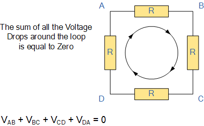

Aim
To Verify Kirchhoff's Voltage Law for different circuits
Physics of the Experiment
The main physics behind the experiment can be given as:
- Kirchhoff's Voltage Law States that in any closed loop network, the total voltage around the loop is equal to the sum of all the voltage drops within the same loop
- To verify this law we need a circuit with closed loops. The circuit should also have different resistor values so that it could be verified for more than one combination of effective resistances
THEORY:

In the given circuit, the user should move in one direction and add all the voltages (with sign).
Voltage drop is negative when one moves along the direction of the current.
Sum of all the voltages in the loop (with sign) should be 0